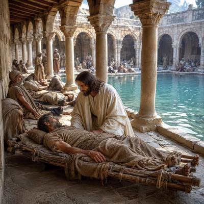

Conforme a un episodio narrado solamente en el evangelio de Juan, en cierta ocasión que se encontraba Jesús en Jerusalén con motivo de una festividad judaica, visitó un estanque de agua llamado Bethzatha, Bethesda o Betesda, ubicado cerca de «la puerta de las ovejas», donde se reunía gran cantidad de enfermos, ciegos, cojos y paralíticos, quienes esperaban que el agua del estanque se moviera, lo que ellos interpretaban como que un ángel de Yahvé descendía del cielo agitando el agua (probablemente con sus alas). Y según su creencia (o mejor dicho, superstición), el primero en introducirse al estanque después de aquel movimiento, quedaba sano de cualquier enfermedad (Juan 5:1-4).


El nombre de Bethesda procede del hebreo Beth Hesda, que suele traducirse como «Casa de Misericordia» o «Casa de Gracia», denominación apropiada para un lugar donde acudían enfermos con la esperanza de sanar. Y resulta que, aunque durante siglos se pensó que dicho estanque no existía, excavaciones iniciadas en el siglo XIX en la parte inferior de la actual Iglesia de Santa Ana en Jerusalén, dejaron al descubierto sus ruinas, que hoy constituyen uno de los yacimientos arqueológicos más importantes de la Ciudad Vieja.
Juan menciona además que el estanque «tiene cinco pórticos» (Juan 5:2), y las excavaciones revelaron que el complejo estaba formado por dos grandes depósitos separados por un dique central, pero cuatro pórticos rodeaban el conjunto, y un quinto cruzaba el dique. Por tanto, Juan describió correctamente una estructura que permaneció enterrada por casi dos mil años.
Se descubrió además que el estanque norte funcionaba como depósito de agua, mientras que el sur poseía amplias escalinatas típicas de una mikve, baño ritual judío destinado a la purificación ceremonial. Y su ubicación estaba junto a la llamada «Puerta de las Ovejas» (ahora Puerta de los Leones), tal como lo menciona Juan (5:2), un lugar por donde ingresaban animales destinados a los sacrificios del Templo, lo que indica que también allí eran lavados los rebaños antes de ser ofrendados. Desde una perspectiva antropológica el sitio resulta valioso, porque revela la mentalidad religiosa del siglo I.
Hasta aquí estamos bien. El problema comienza cuando entramos al terreno de las creencias, con eso de las aguas moviéndose por un ángel y la curación mágica de los enfermos. Esto, sin duda, constituye un ejemplo de pensamiento mágico-supersticioso. Pero resulta que la arqueología también aclaró el antiguo enigma: el movimiento del agua probablemente se debía a un manantial subterráneo intermitente que liberaba burbujas, o al efecto hidráulico que se producía cuando se abrían las compuertas que comunicaban ambos estanques. Y ninguna de estas hipótesis requiere de seres celestiales alados.
Dice el evangelio de Juan que entre los enfermos «había allí un hombre que hacía treinta y ocho años» estaba paralítico, al que Jesús vio acostado y le preguntó si quería ser sanado (¡vaya pregunta!, ¿qué enfermo no lo desearía?). Y el hombre respondió que no tenía quien lo metiera al estanque en el momento preciso en que el ángel descendía (Juan 5:5-7), por lo que Jesús simplemente le ordenó que se levantara, recogiera su camastro y se fuera (Juan 5:5-8). Y dice el redactor que al instante el hombre sanó haciendo lo que Jesús le había indicado… Pero surge de inmediato una pregunta: ¿Por qué no aprovechó Jesús la oportunidad para sanar con sus poderes divinos al mismo tiempo a todos los enfermos que allí se encontraban? ¿Qué pasó con su empatía? ¿Qué pasó con su amor al prójimo?
Pero hay algo aún más interesante: que según el propio Evangelio, Jesús nunca corrigió aquella absurda creencia de la gente. Si él era uno con el Padre (Juan 10:30) y cocreador del universo, poseía un conocimiento perfecto del funcionamiento de las cosas, por lo que pudo explicarle a aquella gente que el movimiento del agua tenía un origen completamente natural, y que las supuestas curaciones no tenían nada que ver. Con toda su sabiduría y palabras muy sencillas, Jesús pudo haberles explicado lo que hoy sabemos gracias a la ciencia: que las enfermedades tienen causas genéticas, infecciosas, inmunológicas, metabólicas, ambientales o traumáticas.
Sin embargo, Jesús calló esos conocimientos (si es que los tenía). Por el contrario, cuando más tarde se encontró en el Templo con el mismo hombre que había sanado, lo que hizo fue advertirle que no cometiera más infracciones contra la Ley de Yahvé, para que no le fuera a ocurrir algo peor (Juan 5:14). Palabras que reflejan que más bien compartía la antigua creencia judaica de que la enfermedad es consecuencia del «pecado», una idea ampliamente expuesta en Deuteronomio 28:15-61, donde el amoroso y comprensivo Yahvé amenaza con enviar enfermedades, plagas, ceguera, locura y toda clase de calamidades físicas, a quienes incumplan su Ley.
Es decir, Jesús demostró su total desconocimiento sobre el verdadero origen de las enfermedades. Nosotros ahora sabemos que nadie desarrolla cáncer, esclerosis múltiple o una lesión medular por haber infringido una norma religiosa. Y hasta resulta significativo que los creyentes actuales prefieren acudir a neurólogos, oncólogos o infectólogos, antes que buscar pecados ocultos como explicación médica. Pero Jesús obviamente lo ignoraba. ¿Qué pasó con su divinidad?
Por otra parte, la reacción de las autoridades religiosas en este caso también resulta absurda, estrecha. Lo único que les interesó es que todo había ocurrido durante un Sabbat (día de reposo ordenado por la Ley judaica según Éxodo 20:9-11), por lo que le reclamaron al enfermo sanado que anduviera cargando su camastro, lo que ellos interpretaban como un trabajo (Juan 5:9-10). Y es que para estos constreñidos fanáticos, el Sabbat (actualmente sábado) era un día que debía dedicarse estrictamente al descanso y la oración, sin que pudiera realizarse ninguna otra actividad que fuera considerada trabajo, so pena de muerte (Éxodo 31:15, Números 15:32-36). El problema es que hasta el mismo Jesús había infringido la Ley, al curar al enfermo en día de reposo.
Aparte de lo anterior, la historia del estanque ilustra también un fenómeno antropológico interesante. Durante la época romana, el lugar fue incorporado a un santuario dedicado a Asclepio, dios grecorromano de la medicina. Es decir, cambiaron los dioses y los rituales, pero el mismo espacio continuó siendo asociado a la esperanza de obtener curaciones sobrenaturales.
Actualmente el estanque de Bethesda ya no funciona como balneario, pero sus ruinas permanecen como un importante yacimiento arqueológico visitado por millones de personas. ¿Se extinguieron sus propiedades mágicas? El hecho es que ya nadie peregrina al sitio esperando que un ángel agite sus aguas para obtener una curación milagrosa. ¿Con el tiempo tendrán el mismo fin actuales sitios milagrosos de peregrinación? ¿Ocurrirá lo mismo con el Santuario de Nuestra Señora de Lourdes en Francia, o con el Santuario de Nuestra Señora de Fátima en Portugal?
En el caso del estanque de Bethesda, al final la ciencia logró algo que «la palabra de Dios» nunca pudo: explicar que las burbujas de un manantial no constituyen evidencia de actividad angelical. El estanque todavía permanece, pero la superstición afortunadamente ha retrocedido.
[Godless Freeman]
Comentarios
Comments powered by Disqus